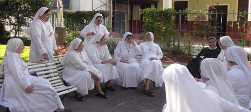

BIENVENIDOS al sitio web de nuestra Congregación "Hijas de la Misericordia de la Tercera Orden Regular de San Francisco", Provincia del Sagrado Corazón de Jesús (Argentina) que desea compartir con ustedes nuestro Carisma, nuestra espiritualidad y actividades apostólicas.
Somos una Congregación religiosa, llamadas a vivir el Evangelio testimoniando el Amor y la Misericordia del Padre, al servicio de la Iglesia, en comunidades de Hermanas, teniendo como centro la Palabra de Dios, la Eucaristía y la oración personal y comunitaria; ejercemos la pastoral en sus diversas formas, para la gloria de Dios, el bien de los hermanos y hermanas, en respuesta a los desafíos de nuestro tiempo
Nuestra Familia religiosa llamada "Hijas de la Misericordia de la Tercera Orden Regular de San Francisco" fue fundada en la Iglesia, por la Madre María de Jesús Crucificado Petkovic en Blato (Isla de Korcula, Croacia), en el año 1920 bajo la guía del Obispo de la Diócesis de Dubrovnik S.E.R. Monseñor José Marcelic. Fue agregada a la Orden de los Frailes Menores (26.01.1928) y aprobada por la Sede Apostólica (6.12.1956).